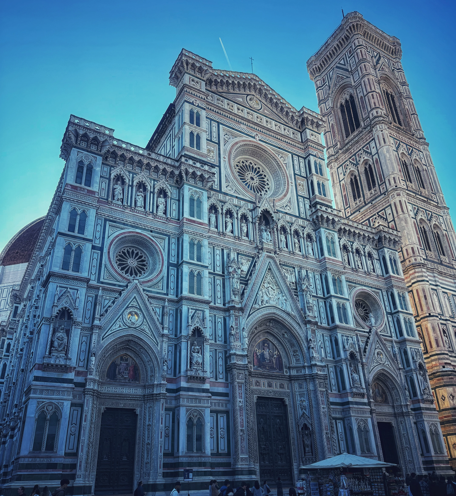
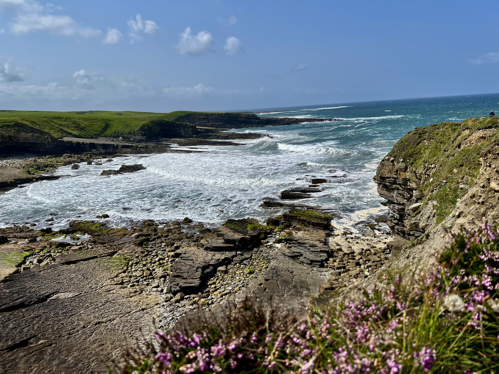
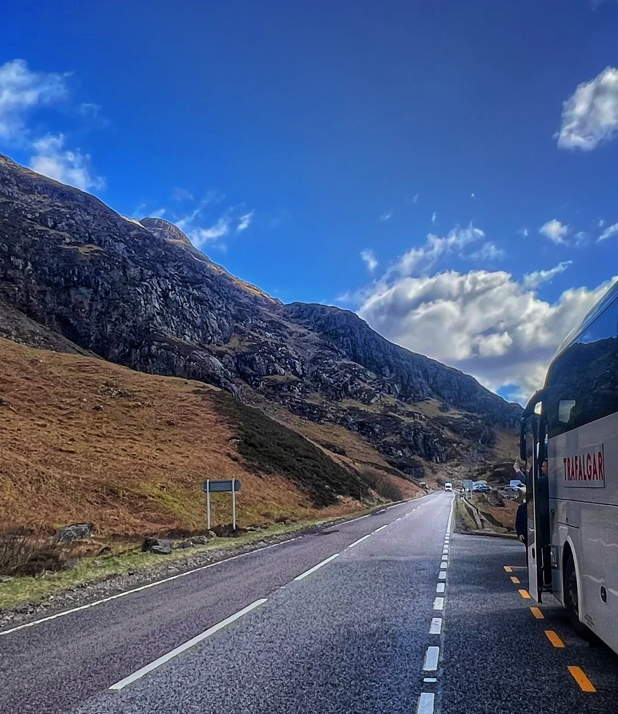

Italy
Still taking shape.
Rome, Venice and the quieter details that make Italy linger afterwards.
Still taking shape →
READING · WATCHING · LISTENING
Films, books and music connected to the places, histories and atmosphere behind the tours.
Some places stay with people because of what they saw there. Others deepen afterwards — through books, films, music and stories that slowly add context and atmosphere to the journey itself.
This is a curated collection connected to the regions and places that tend to leave the strongest impression on tour.

Ireland
From Dublin literature to the west coast landscapes of Kerry and Connemara.
Continue into Ireland →
Scotland
Highland roads, Glencoe silence, island music and the stories behind them.
Continue into Scotland →
Italy
Rome, Venice and the quieter details that make Italy linger afterwards.
Still taking shape →
From the Road
Road writing, atmosphere and small reflections from the lived experience of tour.
Stories from the road →